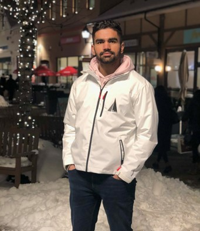

Hello! My name is Gurmehak (pronounced GUR-mek) and I am a 4th year Mechatronics student at the University of British Columbia in Vancouver. My professional interests include the fields of automation, robotics, firmware development, and full-stack software development.
I am continually looking to learn new things and expand my capabilities. Over the last few years, I have been involved in a variety of projects and experiences which I consider to be significant in my professional development. This portfolio is a log which presents a summary of each project. Note that some projects from my internships are not featured here due to confidentiality reasons; please refer to my resume for detailed descriptions of my professional experience.
Outside of school and work, I enjoy participating in various physical activities such as basketball, running, and weightlifting. I am an avid reader of historical fiction, biographies, and adventure novels. I also enjoy creating sketches and oil paintings from time to time.
